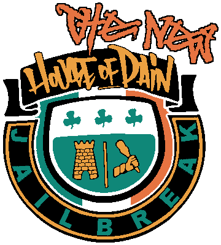

- Show common sense and basic respect, no harassment.
- No explicit or NSFW content.
- Do not exploit map bugs or spam.
The point of this game is that the red team takes orders from the blue team, if the red team does not follow these orders exactly they will be shot and killed.
The blue team are referred to as "CTs". Red team are referred to as Ts.
The last T to follow orders (doing what everyone else has/had to do) gets a "last request", meaning they can tell CTs what to do.
After the process is complete, they must kill themselves, or be killed by the CTs.
If the T attacks a CT without a reason, CTs may kill them.
The last request should last 90 seconds.
Ts may not request anything that results in a freeday, hunger games, hat days, joke days, stupid shit such as making everyone type a command into console, modifying the way CTs give orders (unless CTs feel like it), or admins to use their commands, unless they feel like doing it.
- 1. There is no "warden" on this server, any CT can give orders. If a CT is already giving orders, do not interrupt them or you will risk being muted/teamswitched.
- 2. The ratio of CTs to Ts is 1:3, this is enforced.
- 3. The command "No detours or delays" is implied with every command. If there are 2 of the order referenced (such as yellow lines), it is delaying to not go to the closest.
- 4. The command "AFK freeze" means do not touch your keyboard or mouse. You are allowed to type into chat, use voice commands, your microphone, and heal with your medigun, but not switching between healing and not healing.
- 5. The command "freeze" means do not jump, switch between crouching/standing, move in any direction, use or switch between your weapons, you may switch between crouching and standing up once immediately before freezing.
- 6. Do not hint those who are alive the location of players that are missing whilst you are dead. This is called "ghosting".
- 7. Cell doors are opened automatically after 50 seconds on most maps, if no orders are given, it's a freeday. You may give orders over freedays.
- 8. Do not turn on friendly fire except while being a CT and during Hunger Games / Arena or risk being banned.
- 9. Orders are given considering a default TF2 configuration, including binds
- 10. The only time crouching is AFK freezing is when you are forced by the map to remain crouched (e.g. on cell beds)
- 11. First reaction/last reaction– If a first reaction action is said, the first T to do it dies. If a last reaction action is said, the last T to do it dies.
1. You must have a working, good quality microphone.
2. You must always be willing to give orders, this gamemode isn't only about killing people.
3. No baiting, that means if you're in melee range with a T, they are allowed to kill you without being killed themselves. If a CTs is charging at you, that is clearly rebelling and you may kill them.
4. When a T asks for a repeat, and you haven't already given one, you must comply. Do not give more than one, and do not give one if nobody asked for one.
5. Do not ask for repeats.
6. If you are away, you will risk being teamswitched/kicked.
7. No armoury/vent camping. That means don't stay inside or near vents or armoury trying to defend it.
8. No special treatment, this means allowing a specific prisoner to do anything else besides following main orders.
9. Opinionated games are fine, but don't make it unfair, like "guess the number I'm thinking" or "what's my favourite food".
10. When playing Simon says, you must state who is Simon and when Simon wants to play Simon says. You do not have to rename yourself to be Simon.
11. If you are playing Keep or Pass, you must type the prize to team chat prior to the T responding whether or not they want to keep or pass it.
12. You may rush Ts that are delaying in the obstacle course or deathrun. If they refuse to move after 10 seconds you may shoot them. The last T to survive may run to the end without dying, as it would be a freekill otherwise.
13. Some games are not timed, such as sweeper, therefore you must give a countdown/timelimit for these.
14. During minigames such as keep or pass, you are not allowed to kill more than 3 Ts at a time.
15. Do not play the same game/minigame twice in a row
16. During games such as Obstacle Course, Death Run, Minefield and similiar, the last CTs standing has to make it as far as every other CTs has, in order to get last request.
17. As a CT, you may not kill yourself during Last Request.